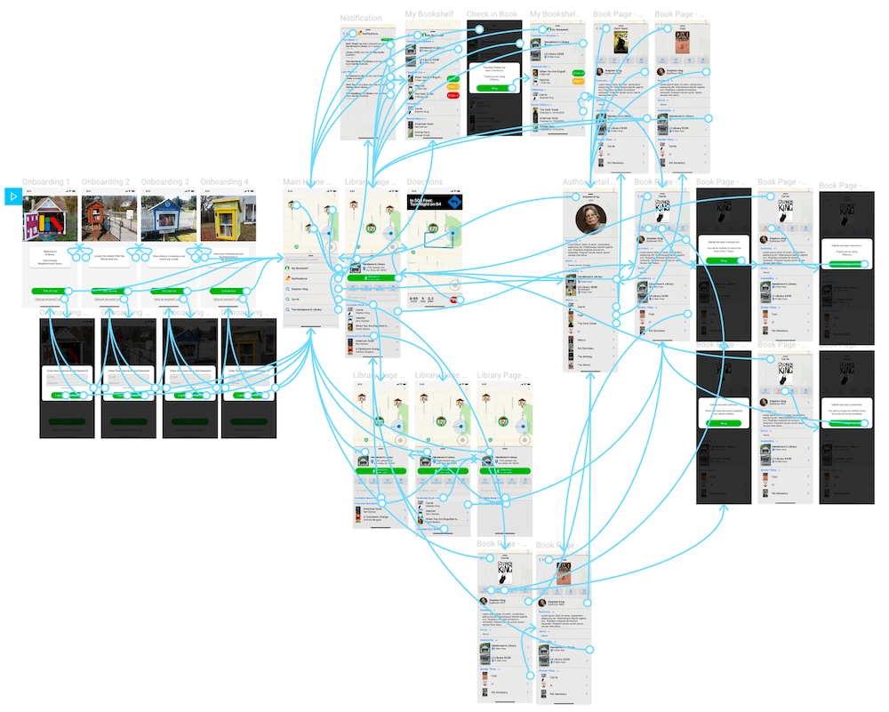

Over the course of the semester, Introduction to Interaction Design taught me the process of taking an idea from initial concept to reality using multiple user experience design and research methodologies. Initially, brainstorming was conducted in order to better understand potential problems that could be potentially be addressed with a digital solution. Once a problem was chosen, a heuristic evaluation was conducted to better understand the competitive landscape and whether or not it is worth investing in a new app.
Next, personas and user stories were created to better understand how potential users might use our potential solution. Once the solution has been fully fleshed out, I also created story maps, sketches, wireframes and prototypes, along with user testing being conducted during each phase of the process. Finally, a interactive prototype in Figma and mobile application written in Java using Android Studio were created after conducting user feedback.
If you’ve ever wandered around Ann Arbor with a keen eye, you might have noticed a tiny library filled with books in a person’s front yard. These tiny libraries are part of the Little Free Library, a non-profit organization that encourages homeowners to build and maintain their own repository of books that can be freely exchanged by anybody in the community. These libraries help foster community outreach and engagement, allowing citizens of all stripes to engage with each other when they normally might not, but I think there’s the potential to take this concept even further using modern information technology. Currently, there are over 75,000 people who have their own little free library, and none of them can be found using a mobile application.
The last phase of the design process was to create a series of wireframes and prototypes that would be utilized to conduct user testing. Wireframes were initially sketched by hand so adjustments could be made on-the-fly. Mid-fidelity digital prototype were also created and user tested. Finally, a high-fidelity prototype was created and iterated through with additional user testing and feedback.
Lil Library’s interface is centered around two critical components: A search bar and a map. Using these two elements, users can easily find the closest Little Free Library in their vicinity within seconds of launching the app. Looking for a specific book, author, or genre? Just use the search bar and the information is at your fingertips. Want to get directions to the closest lil library near you? Find one on the map.
Once the user has found a lil library or book they want information on, that’s where the fun begins. Users can easily get step-by-step directions to the closest Little Free Library, along with the books are currently available. Users can then check in or check out, and follow or unfollow, any book. Users also have access to their search history, personal data (My Bookshelf), and Notifications.
Final Prototype Wireframe
My solution, Lil Library, is a mobile app that’s built from the ground-up using crowdsourced data who are already engaging in the current Little Free Library infrastructure. With Lil Library, users will be able to find a wide array of information that’s not currently accessible using the Little Free Library’s current website map. Lil Library lets users search for the closest Little Free Library in their area and view its inventory, check-in and check-out books, or request new books. You can even view your rental history and get suggestions for other book titles they might enjoy.
Little Library is a final group project for the Mobile App Innovation at the University of Michigan Ross School of Business. Originally conceived by Corbet Griffith, Little Library was developed as a fully working Android app written in Java for the final group project.
Little Library Android App Github